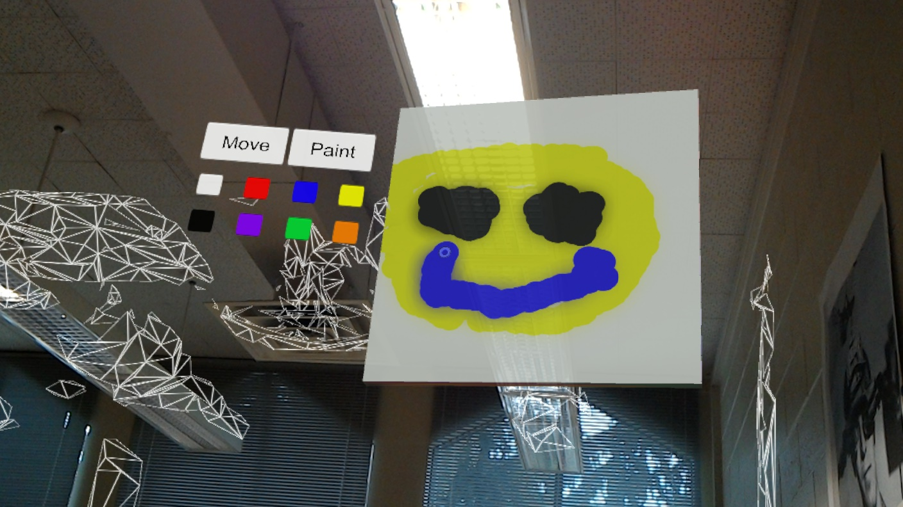
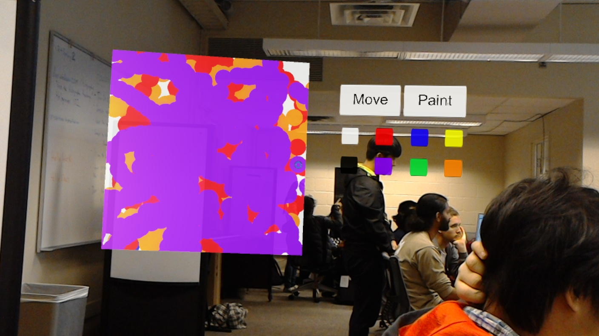

Intro
This week, we were able to complete the networking portion of the application as well as gesture recognition for drawing. Most of it is still pretty rough on the edges but we hope to fine tune these features for the remainder of the week before Tuesday’s demo.
Progress
Networking mode currently synchronizes all the paint drawn on all instances of one board with fairly minimal lag (supports multiple colors). We were surprised as to how well it worked after we tried it out as one user’s paint would show up on the other user’s device with maybe 100ms of latency. Gesture recognition now supports gesture recognition for pinch and drag. Users can now draw continuously on the board though currently it only consists of disconnected dots so when the user moves too quickly a dotted line will appear. This will likely be improved by increasing the refresh rate of painting when pinching and dragging occurs.
For the UI portions, our application now supports twice as many colors and the application will give feedback to the user once a color is selected.
Currently, our work is split up as such.
Thomas and Andy are working on improving the hand gesture detection and painting capabilities associated with it.
Panji is working on improving the networking module, allowing sharing of the whiteboard background and creating a better foundation for managing multiple whiteboards.
Radu is working on adding more UI elements as well as splitting the current painting layers into 3 separate layers (background, transparent drawing layer, sprite layer) for better management of shared painting.
Progress Pictures
Drawing things with hand gesture
 Difficulties we encountered
One thing that we encountered was how the navigation event (pinch and drag) will cancel if the user moves the gaze off focus of the object. The weird thing that occurs is if the user pinches and drags at the bottom of the object and the hand follows the gaze up to the top, the navigation event is still updating. However, once the user lifts the head up a bit off focus of the object (with hand still pinched and in view), the navigation event is cancelled. This seems to affect usability of the application a bit as the user must now restrict head movement to prevent the gaze focus from moving off the object. We have posted on the Microsoft Hololens forums to learn more about the Navigation event and find a solution to this problem.
Another difficulty we encountered was in the networking part because of the lack of documentation for the Holotoolkit and the techniques we learned from Holograms 240 was too specific to be used generally. As such we have not figured out the single hologram whiteboard sharing and though we have implemented the sharing of the painting, there could be future problem with making it more general.
Plan for next week
Next week we plan to prepare for the Tuesday Demo for the first 2 days and then focus on more advanced UI elements such as multiple whiteboards, a more elegant menu, and other painting functionalities. However, we will likely focus on whiteboard features and then move onto painting features once whiteboard features have been mostly completed.